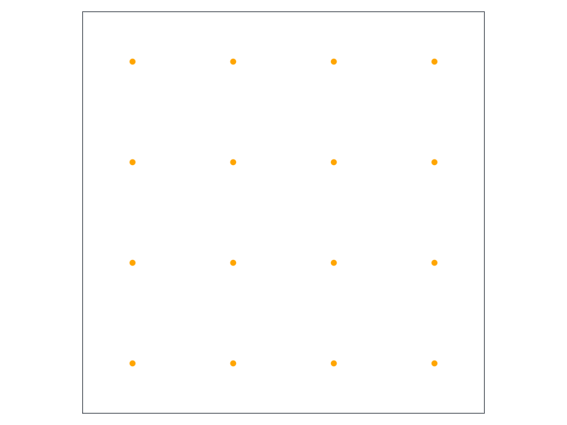
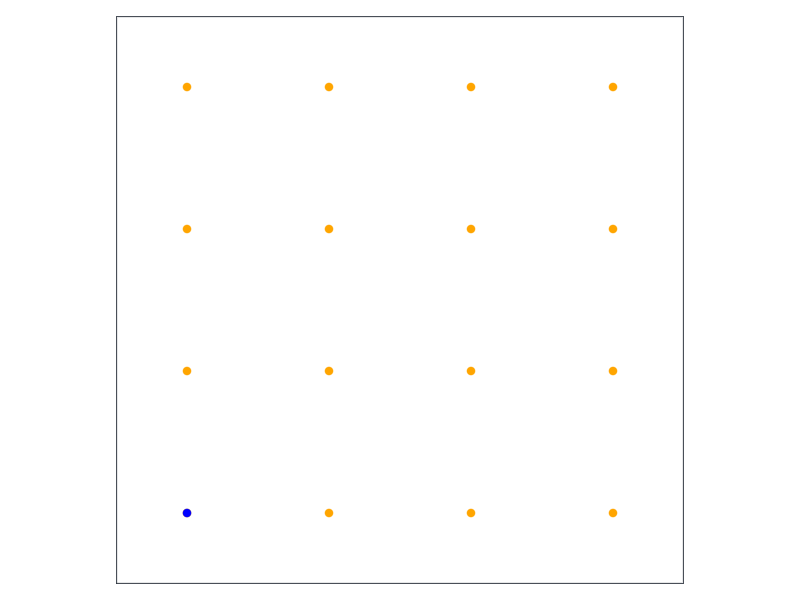
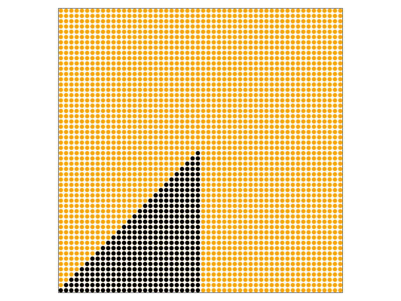
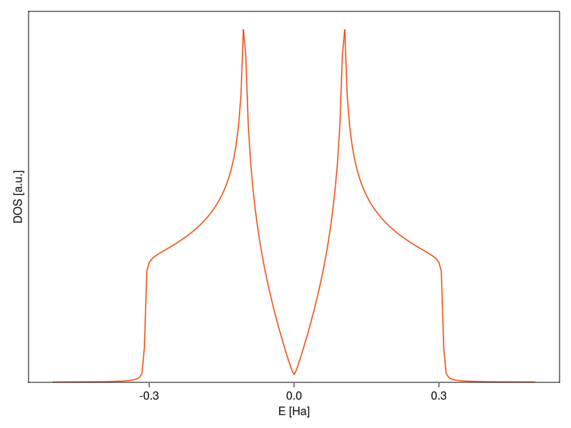

Computational Physics for the Masses Part 4: Symmetric
A brief part on crystal symmetries and how to (ab)use them for fun and profit.
Julia
Quantum mechanics
Solid state physics
Author
Tomas Polakovic
Published
March 17, 2023
Today we’re going to talk about something that causes most physics students to lose interest in solid state physics1: Crystal symmetries and (some) of their uses. As painful as it is, these things are really useful and they pop up all over the place. I try to painlessly intersperse them into more entertaining stuff as much as possible, but sometimes there’s no avoiding spending a whole chapther/blog post on just crystallopgraphy. And this is one those situations…
Activating project at `~/projects/website/posts/cmpm4/env`
Using our package
This is going to be the first time we’re using the library (package in Julia terms) that we started working on previously. I named it somewhat unimaginably SimpleQuantum and, if you look at it’s repo, it’s already at version 0.2.5 (I’m using Semantic versioning).
It’s not on the Julia package registry, so to add it, you have to provide the link to the repo. From now on, I’ll try my best to always keep these posts synced with releases of the package, but not this time. The package went through a lot in the last couple of months, so what we’ll be doing today is already in there. If you want it in a state closest to what’s happening in this post, you should add it at version 0.2.5 by the following into your Julia REPL:
There a few usual suspects that don’t need any introduction and Combinatorics is pretty self-explanatory. Then there’s a bunch of new stuff: MinkowskiReduction is a package for basis reduction (explanation later), Brillouin is used for some nice visualization of Brillouin zones and Wigner-Seitz cells, StaticArrays is for more efficient small arrays, and SplitApplyCombine for some convenience functions related to array splitting and combining.
Dense motivation
To motivate why we should bother with all this, let’s propose the following problem: Imagine that we have function \(f(\vec{k})\) which is a function of momentum in our crystal. And now imagine that we want an integral of the function, in principle over the whole (momentum) space:
\[
F = \int f(\vec{k}) d\vec{k}
\]
Easy enough, if it weren’t for the fact that we’ll want to do this numerically and the momentum space is infinite. While we’re imagining, let’s also imagine that we have a large (but for the moment finite) \(D\)-dimensional crystal with \(\mathcal{N} = \prod_{i=1} ^{D} \mathcal{N}_i\) unit cells. If the crystal is finite, it has finite amount of lattice vectors and, consequently, also only a finite amount of physically meaningful reciprocal lattice points2:
For a sufficiently large crystal, a sum over the vectors \(\vec{q}_{\vec{l}}\) can be thought of as the Riemann sum, meaning that we can write: \[
\frac{(2\pi)^3}{\mathcal{V}}\sum_{\vec{q}_{\vec{l}}} f(\vec{q}_{\vec{l}})= \frac{(2\pi)^3}{\mathcal{N}\Omega}\sum _{\vec{q} ^{\prime} _{\vec{l}}} f(\vec{q} ^{\prime} _{\vec{l}}) \stackrel{\mathcal{N} \rightarrow \infty}{=} \int f(\vec{q}) d\vec{q},
\]
Where \(\Omega\) is the volume of the unit cell. In the second expression, I used the fact that all momenta in a crystal can be represented only by the momenta \(\vec{q}^{\prime}\) in the first Brillouin zone.3
That’s the formal side, now let’s imagine an actual physics problem: heat capacity of metals at low temperatures. From thermodynamics, we know that the specific heat of…well, anything really, is defined as:
which describes how much does the internal energy of the system change when we change it’s temperature while keeping volume constant.4 To get the total energy of our electrons, we need to count how many there are at each energy and multiply them by that value. Because we’re talking thermodynamics, we need to introduce probability distributions into the mix, to properly count how many electrons there are at a given (degenerate) energy level at a given temperature \(T\). Because electrons are fermions, that probability distribution is the Fermi-Dirac distribution \(f(\epsilon, T) = \frac{1}{\exp{\left( \frac{\epsilon - E_{F}}{T} \right)} + 1}\), where \(E_F\) is the Fermi energy (maximum occupied energy of the system). With that, the energy of the electronic system is:
Where \(N(\epsilon)\) is the number of electron states at energy \(\epsilon\) (factor of 2 because each state can take two electrons of opposite spin). After using the Sommerfeld expansion for the expression above, we get (up to second order in temperature):
From there, it’s pretty straight forward to show that the specific heat simply becomes:
\[
c_V = \frac{2\pi^2}{3} N(E_F) T.
\]
You could argue that the intergral above is across energies and not momentum, but remember that the eigenstates and eigenenergies of our crystal Hamiltonian functions of momentum, so it can be rewritten in the form:
is called the density of states and it pops up all over the place in solid state and condensed matter, so even if it were the only thing we’ll be able to calculate after we finish this part, it is worthwhile to do.
Living on the grid
Just looking at the equations above, you’d think that the integrating over the Brillouin zone is not that hard. We already have two ways of calculating the energy (or whatever other property) as function of momentum5, so we can just spread a dense enough grid over the momentum space, evaluate the function(s) and sum it all together. You’d be right. But it’s often desirable to do this integration many times6 and, in that case, we should be efficient at it.
The way the integrals are evaluated in practice has been proposed by Monkhorst and Pack [1], after which it’s called the Monkhorst-Pack grid method (MP grid for short). Their idea is that many points in the momentum space can be transformed into each other by the symmetries of the lattice, so the functions on these points will have identical values. After this realization, the task becomes to find the smallest possible number of k-vectors that cannot be transformed into each other and finding how many “relatives” these points have (i.e., into how many grid points in the Brillouin zone can they be transformed by lattice symmetries).
The first thing to do is to generate a grid that coincides with the symmetries of the reciprocal lattice: Take a D-dimensional crystal with primitive reciprocal lattice vectors \(\left\{ \vec{G}_{n} \right\}_{n = 1} ^{D}\) and define a grid spacing in reduced coordinates as:
The Brillouin zone of a square lattice is a square, which we can now finally plot along with our MP grid:
plotbz(cr)ks =Iterators.product(ntuple(_ ->mpspace(4), ndims(cr))...)G = cr.lattice.G'for k ∈ ks k =collect(k) k = G * kscatter!(k...; color=:orange)endcurrent_figure()

Nothing too exciting. I just create a 1D MP grid with 4 gridpoints and use Iterators.product to make all products of them, forming a 2D square grid (and multiply by \(G\) to get k-vectors in physical coords that Brillouin uses).
Grouping points
It should be obvious, just by inspection, that some of the grid points have to be physically identical due to the crystal’s symmetry. For instance, if a square crystal is rotated by 90 degrees, it will result in the same square crystal, right? So let’s take one of the points and color it blue:
plotbz(cr)ks =Iterators.product(ntuple(_ ->mpspace(4), ndims(cr))...)G = cr.lattice.G'for k ∈ ks k =collect(k) k = G * kscatter!(k...; color=:orange)endlet k = G *collect(first(ks))scatter!(k...; color=:blue)endcurrent_figure()

You see that it is identical with all the points in the corners, because I cannot tell if someone rotated my sample by 90 degrees when I wasn’t watching. That means that I can calculate the value of whatever depends on the blue point, multiply it by 4, and ignore the other corner points while still getting the same result.
Identifying the symmetries just by inspection is easy in this case, but it can be a mess in general, so it’s desirable to have the computer do it for us. Programatically identifying all the symmetries of a crystal and the multiplicity of k-points is usually done with the help of Spglib [2], which is a pretty robust library that suffers from one pretty big drawback in that it works only with 3D crystals. I could look up or write a Julia interface to this library, extend our lower-dimensional crystals to 3 dimensions, and then cherry pick just the symmetries that transform within the confines of our actual lattice, but that’s a lot of work which might or might not carry a bunch of strange edge cases and bugs. There is a Julia package called SymmetryReduceBZ, but after some finagling, I found it a bit too slow and still depends on SciPy, so there’s some foreign function calling happening under the hood.7 So we’ll roll our own.
A relatively easy way to find the point group of a crystal (all symmetry operations that don’t have translations) is by the lattice point permutation, which I’ll explain in a second. Before we get to the meat of that algorithm, there’s one complication that’s good to take care of: a lattice basis is not unique. We can choose vectors connecting arbitrary lattice points and, as long as they’re linearly independent, they will form a valid basis.8 It’s not necessarily the end of the world, but it minimizes the potentiality of weird stuff happening and simplifies the algorithm if we can find a “best” basis through lattice reduction. The algorithm for reducing 2D bases was found by Lagrange and Gauss almost 300 years ago, but an efficient and foolproof way of doing this is a hard problem.9 Fortunately, solutions for small-ish number dimensions exist [3] and have been implemented, which is why we’ll use MinkowskiReduction that has some of the implementations ready for us.
functionreduced_basis(c::Crystal{2}) vs =GaussReduce((eachcol(c.lattice.R))...)hcat(vs...)endfunctionreduced_basis(c::Crystal{3}) vs =minkReduce((eachcol(c.lattice.R))...)length(vs) >3&&returnhcat(vs[1:3]...)hcat(vs...)end;
Different dimensionalities of the basis call for different algorithms, so I dispatch on the dimensionality of our Crystal structure and call the appropriate reduction method. For whatever reason minkReduce keeps returning also some extra debug information, so I clip that and return just what I need.
With that distraction out of the way, we can get to the actual point group identification. This is done in the following way: First, we’ll norm all the basis vectors, ceil them and construct all the linear combinations of ± the vectors.10 Then we take permutations of pairs from this set stacked into a matrix, which creates a list of operations that map from one grid point to another. All operations that preserve the norms of the basis vectors (checked by comparing the norms before and after applying the operation) and volumes of the unit cell (simply by checking that the determinant of the operation is same as the volume of the unit cell) are, by definition, the point symmetry operations of the lattice. In code version:
functiongetPG(c::Crystal) R =reduced_basis(c) |>Matrix D =ndims(c) iR =inv(R) norms =mapslices(norm, R; dims=1) vol = c.lattice.V ls =ceil.(norms) verts = (Iterators.product(ntuple(i ->-ls[i]:ls[i], D)...).|> collect|> x ->reshape(x, :, 1)|> combinedims)[:,:,1] out = SMatrix{D,D}[]for perm ∈permutations(1:size(verts, 2), D) vs = R * verts[:, perm] _norms =mapslices(norm, vs; dims=1) _vol =abs(det(vs))ifall(norms ≈ _norms) &all(vol ≈ _vol) op =SMatrix{D,D}(vs * iR)ifall(op'* op ≈ I)append!(out, [op])endendend outend;
It outputs an array of static matrices representing the point symmtery operations of our crystal, which is the more complicated half of the puzzle of solving today’s problem.
Arrays and StaticArrays
Everything in the computer needs to be stored somewhere in it’s memory. Simple structures, like numbers, have a memory footprint that’s always known. It doesn’t matter if a variable contains number 0 or 19482, a 32-bit Int32 will always take 32 bits in memory. When a method is compiled/run, the (JIT) compiler can imediately ask for appriopriate memory allocation for these objects from the operating system, because it can determine how much it needs just from the code itself. This chunk of memory is allocated staticaly (as in, the memory requirement doesn’t change during the runtime) on what’s called a stack.
Arrays are a different thing, as they can change their size depending on parameters passed at runtime. Because the complier cannot know (or at least guarantee) their size just from the written code, there needs to be a mechanism for dynamic memory allocation, usually done to the tune of how C does it. What’s stored on the stack is just a pointer (which has static size that depends on the operating system – these days it’s usually 64 bits) that points to a chunk in large pool of memory called the heap. When you create an array, the compiler works with the operating system to allocate some amount of memory (details depend on the implementation) and get the pointer to where the array starts on the heap. Then, if you know the size of the objects stored in the array, let’s say 64-bit integers, you know that the first element is at the pointer, second element is at the pointer + 64 bits, etc (this is why many languages use 0-based indexing for arrays).
As you can imagine using naked arrays like that comes with a lot of footguns and the programmer, user or even the compiler cannot be trusted to handle them without causing serious bugs. Because of that, most languages try to package the naked arrays into chunkier datatypes that provide more safeguards, such as vectors in C++ or the usual arrays in Julia. These safeguards make running your code safer and less error-prone, but also slower.
That’s where StaticArrays helps us. It provides staticaly sized arrays where their size is part of their type, which allows the compiler to elide many of the runtime checks and gives additional guarantees that enable more optimization and less garbage collection. The static arrays have the same functionality as normal arrays, with all the convenience of using them as matrices and vectors in linear algebra and, potentially, better speed and less memory pressure (although, as with any optimization, don’t do it prematurely – profile first).
The next step is to carve out only the unique k-vectors out of the grid we generated. These are said to be in the irreducible Brillouin zone, which is called as such because it’s a wedge of the Brillouin zone that cannot be further eliminated by cutting out its symmetrical counterparts. We’re going to just brute-force it by taking all the k-vectors one-by-one and checking if they can be mapped by symmetry operations into another k-vector in the list (I also make a helper function that does approximate comparison to tell if a number is in an array of floats):
functionisapproxin(el, itr; kwargs...)for i ∈ itrisapprox(el, i; kwargs...) &&returntrueendfalseendfunction_maptoibz(ks, c::Crystal, pg; kwargs...) D =ndims(c) out = SVector{D}[]for k ∈ ks k =SVector{D}(k) mks =map(m -> m * k, pg) isin =falsefor mk ∈ mksifisapproxin(mk, out) isin =truebreakendendif !isinpush!(out, k)endend outendfunction_maptoibz(ks, c; kwargs...)_maptoibz(ks, c, getPG(c))end;
This operation will usually not be ran more than once per calculation, but there might be circumstances where you want to pre-calculate the point symmtery group, so I use dynamic dispatch to provide that option. To demonstrate, let’s plot a denser MP grid and show which k-vectors survive the symmetry reduction:
plotbz(cr)ks =Iterators.product(ntuple(_ ->mpspace(54), ndims(cr))...)ksInIBZ =_maptoibz(ks, cr)G = cr.lattice.G'for k ∈ ks k = G *collect(k)scatter!(k...; color=:orange)endfor k ∈ ksInIBZ k = G *collect(k)scatter!(k...; color=:black)endcurrent_figure()

Now you can see the benefit of what we’re trying to do. The only unique points in the Brillouin zone are colored black in the above figure, clearly showing that we can cut the computational time and memory load by a factor of 8 (might be more or less, depending on the symmetry of the crystal). It doesn’t change the scaling of any of our algorithms, but having a calculation run for 0.13 seconds instead of 1 second can make a big difference when you need to do it a million times. It’s not the most efficient way to do the symmetry reduction becase it has quadratic scaling with the number of k-vectors (each vector is compared to almost each other). There are clever ways to map the real-number coordinates to integers, after which the whole set of k-vectors can be converted to a dictionary, which makes identification of unique vectors much faster, but that takes too much effort for something that’s going to be run once during the initialization of our calculation.
The last step is determining the multiplicity of the unique vectors. That we’ll, once again, brute-force by taking each vector in the irreducible Brillouin zone, apply every symmetry operation and count how many times it maps to a different vector in the full Brillouin zone (this time I make a helper function to tell if an element of an array is approximatelly unique):
functionapproxunique(itr; kwargs...) out =Vector{eltype(itr)}()push!(out, itr[1])for itrel ∈ itrifmap(x -> !isapprox(itrel, x; kwargs...), out) |> allpush!(out, itrel)endend outendfunctionibzωk(c::Crystal, q::Int, pg) n =ndims(c) ks =Iterators.product(ntuple(_ ->mpspace(q), n)...) ks =_maptoibz(ks, c) ωs =map(ks) do kmap(p -> p * k, pg) |> approxunique |> lengthend (ωs, ks)endfunctionibzωk(c::Crystal, q::Int)ibzωk(c::Crystal, q::Int, getPG(c))end;
We feed the function the Crystal itself and the number of k-vectors along an axis q, and receive a tupple of multiplicities \(\omega\) and the corresponding vectors from the irreducible wedge. To check, let’s go back to the sparse grid:
plotbz(cr)ks =Iterators.product(ntuple(_ ->mpspace(4), ndims(cr))...)(ωs, kibz) =ibzωk(cr, 4)G = cr.lattice.G'for k ∈ ks k = G *collect(k)scatter!(k...; color=:orange)endfor k ∈ kibz k = G *collect(k)scatter!(k...; color=:black)endprintln("ωs: ", ωs)print("ks: ", kibz)current_figure()
And it is, indeed, correct. The two vectors along the diagonal have a multiplicity of 4, because they map into other diagonals by the 4-rotational symmetry of the square lattice. The other one also has additional reflection symmetry along the diagonals, so it has multiplicity of 8.
The last thing is to provide a method that evaluates the integral across the Brillouin zone, and we’re done with the generic problem:
Easy as that. I skip the normalization to appropriate volume, because that might depend on the convention used and it often is irrelevant. We could do the density of states using this generic method, but it’s a common enough and specific problem for us to provide that functionality explicitly, for ease of use and efficiency…
Broad States
If we want to go with the real definition of density of states, we’ll just count the number of states at each energy, i.e.,
In the theoretical limit of a infinitely large crystal, \(N(\varepsilon)\) will be a continuous function of energy because there will a continuous set of k-vectors in the crystal. In a finite crystal, the there’s only a finite amount of k-vectors in the Brillouin zone and the density of states becomes discontinuous, and usually will have value of at best ~1 (the chances of two discrete states having the same energy are slim). That is a problem, because the numerical calculation will then not correspond to what we calculate analytically or measure. One way to solve this is to make \(N(\varepsilon)\) a histogram and interpolate the values of the bins (the way it’s frequently done).
Another way is to get a little inspiration from experimental reality. A typical measurement of density of states is done by some form of spectroscopy where we measure a property proportional to the DOS at a given energy. In the same way that an emission line of a single level in atomic gasses is not a infinitely narrow, there will be some spectral broadening happening in the measurement of our solid – the spectral line shape will turn into a Lorentzian and there will be a small contribution to DOS even outside of nominally occupied levels. The nice thing is, that the delta function can be represented as a limit of the Lorentzian:
Forgeting the limit part of the equation, \(N(\varepsilon)\) will be continuous for any non-zero value of \(\epsilon\) and, should we have a good handle on the broadening, potentially even more physical.
Ok, let’s get to coding it up. At the end of the last post, I drafted the idea of having some nice, user-friendly interface that would abstract away all the math and do most of the boiler plate. That lives in the interface.jl file. It has a few abstract types, like ReciprocalHamiltonian that demands it’s concrete implementations to be applicable to k-vectors. It also has a bunch of problem types like ReciprocalBandProblem that set up the necessary calculations. All the problem types should implement a solve method that then actually runs the problem calculation and outputs some solution type, which can then be processed as necessary. Let’s start from the end of this process – the solution:
struct DOSSolution es evals nks broadeningendfunction (d::DOSSolution)(E) ϵ = d.broadening (1/(π* d.nks)) *map(d.evals) do ensmap(ens) do En ϵ / ((E - En)^2+ ϵ^2)end|> sumend|> sumend
As you can see from the above equation, all you need is the eigenenergies evals at k-points in the Brillouin zone (of which we just need the number nks) and the line broadening. Density of states at any energy can then be simply calculated by running the sum over states, which is what the defined method does. Just to preserve the setup->solve->process/plot pipeline, I also include the energies es at which we want to evaluate the density of states.
Making structures callable
In principle, the above method could have been handled by a closure, where I would do something like dos(E, d::DOSSolution) = E -> ..., but closures like this are unwieldy. Instead you can use Julia’s option to make a type callable by doing function (foo::SomeStruct)(x) ... end, which will then allow you to use an instance of a type as a function.
Now to get to that solution, we need the corresponding problem container type and it’s solve method:
struct ReciprocalDOSProblem h dosendfunctionsolve(dp::ReciprocalDOSProblem) h = dp.h dos = dp.dos q = dos.nq ϵ = dp.dos.broadening 𝑛 =ndims(h) ks =reshape(Iterators.product(ntuple(_ ->mpspace(q), 𝑛)...) |> collect, 1, :) nks =length(ks) hs =h.(ks)iftypeof(first(hs)) <: Tuple es =map(h ->eigen(h...).values, hs)else es =map(h ->eigen(h).values, hs)endDOSSolution(dos.es, es, nks, ϵ)end;
The problem container consists of the Hamiltonian to be solved and a helper type DOS that actually contains the problem definition. This type is also what’s to be used to assemble the problem itself:
struct DOS es broadening nqfunctionDOS(es::Vector{<:Real}, broadening::Real, nq::Integer)new(es, broadening, nq)endendfunctionDOS(es::Vector{<:Real}, nq::Integer) broadening =√(minimum(diff(es)))/50DOS(es, broadening, nq)endfunctionDOS(es::Vector{<:Quantity}, broadening::T, nq::Integer) where T <: Quantity es = Unitful.NoUnits.(es ./ Ha) broadening = Unitful.NoUnits(broadening / Ha)DOS(es, broadening, nq)endfunctionDOS(es::Vector{<:Quantity}, nq::Integer) es = Unitful.NoUnits.(es ./ Ha)DOS(es, nq)endfunction (d::DOS)(h::SimpleQuantum.ReciprocalHamiltonian)ReciprocalDOSProblem(h, d)end
Where es are the energies over which we want to evaluate the density of states, broadening is pretty self-explanatory by now, and nq is the number of points on the (symmetry-reduced) k-space space grid that we’ve been working on earlier today. To create your problem, you first make an instance of DOS11 and apply it to a Hamiltonian.
Everything is ready, the last thing that’s missing is the plotting functionality, which can now be implemented very easily for our solution type:
grhops =Hoppings(graphene)for hop ∈ SimpleQuantum.unique_neighbors(graphene)addhop!(grhops, -2.8eV, hop.i, hop.j, hop.δ)endgrH =TightBindingHamiltonian(grhops);
The problem statement – Density of states over range of 1 Ha with 400x400 k-space grid:
grdos =DOS([i * Ha for i ∈-0.5:0.005:0.5], 400);
And, finally, the pipeline:
grH |> grdos |> solve |> plotSolution

Beautiful. The nice thing about this setup is that all computation is defered until the call to solve, so you can do everything interactively in the REPL without having to wait for anything and then just sending it at the end.
The density of states plot looks like it’s supposed to12. To better understand what’s going on there, let’s plot the band structure again:
The peaks of the density of states are at around 0.1 Ha, which is where the bands get flat around the M-points. The flatter the band at some energy, the more states are around it13, which increases the contribution to DOS. At higher energies, there’s nothing because the bands have limited width and at lower energies, the DOS goes continuously to zero as it approaches the K-point.14 In an insulator, there would be a finite range around the fermi energy where the DOS is zero (the band-gap), but graphene is a bit special in that it has a “zero-width” band-gap where there are no states only at exactly E = 0.
And that’s all for today. A bit of a shorter post, but that’s probably for the best. We’ll stick to single-particle methods for a tiny bit longer, where we’ll revisit the nearly free electron method in context of transferable pseudopotentials (and maybe I’ll add one more computational method), but after that, we’ll have to drop this simplification and start working on many-particle systems with all the heartache that brings.
References
[1]
H. J. Monkhorst and J. D. Pack, Special Points for Brillouin-Zone Integrations, Physical Review B 13, 5188 (1976).
[2]
A. Togo and I. Tanaka, arXiv Preprint arXiv:1808.01590 (2018).
[3]
B. Helfrich, Algorithms to Construct Minkowski Reduced and Hermite Reduced Lattice Bases, Theoretical Computer Science 41, 125 (1985).
[4]
J. Hobson and W. Nierenberg, The Statistics of a Two-Dimensional, Hexagonal Net, Physical Review 89, 662 (1953).
{kind=link}